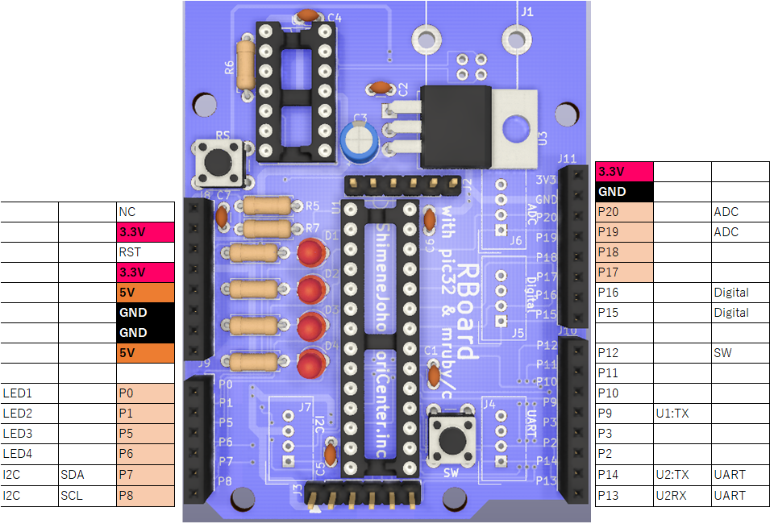
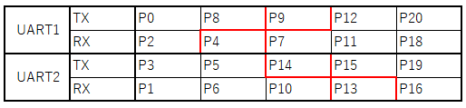

PIC32MX170F256B DIP Version2.0
 The UART settings can be changed as shown in the table below.
※The I2C pins cannot be used for any other purpose.(P7,P8)
Usable Ruby code：class / method
CAD data：URL
Firmware：github
Tech specs
Microcontroller：PIC32MX170F256BInput Voltage：3.3V~12V(USB)
Operating Voltage：3.3V
Digital I/O Pins：21(P0~P20)
Analog Input Pins：10(P0,P1,P5,P6,P7,P8,P17,P18,P19,P20)
Clock Speed：20MHz